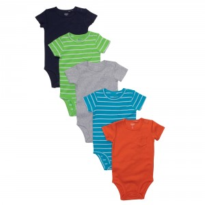
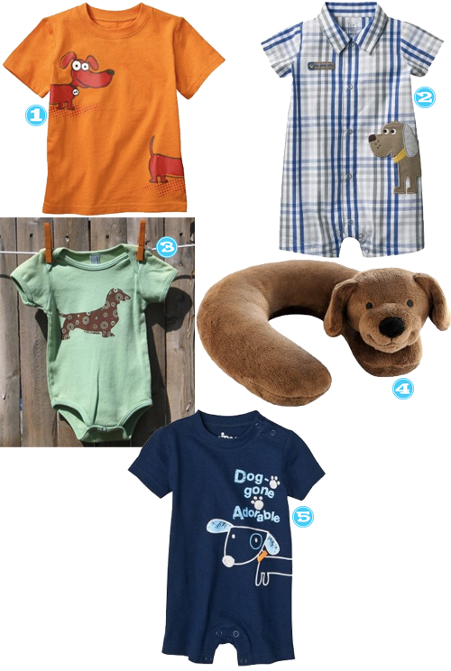
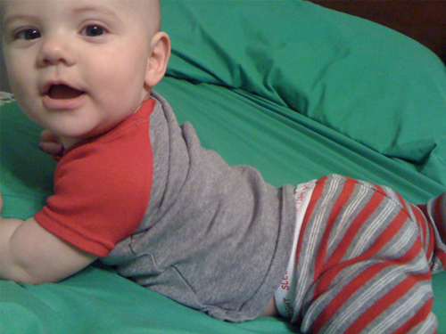
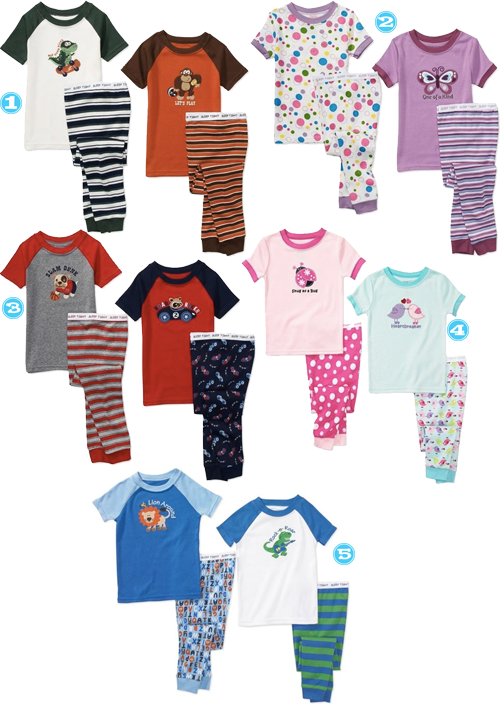

When we threw AK a baby sprinkle for her second bambino, she received the cutest of onesies I have ever seen. I just KNEW I had to have them for my little guy. Of course, the are Carter’s. I love Carter’s. As much as my baby has a dunlap, he still if of the longer and leaner variety when it comes to babies and Carter’s seems to be a great fit all through his first 7 months. Anyway, drum rolllll…. here are the cutest, most basic baby boy onesies ever. LOVE LOVE LOVE them.
Sweaty Baby
April 26, 2011 by

I have a very important question that I need answered and I’m calling on all you moms out there since I’m new at this. See that little guy down there? He is uber hot natured at his ripe old age of almost 7 months. We aren’t even in the heat of the summer and the poor little guy has almost over heated several times just from riding in his carseat. I turn the AC on full blast and that still doesn’t seem to help much. Do any of you have any advice for this? Any breathable carseats you can recommend? Does this carseat cooler thing or something like it work? HALP!
Baby Flops
April 11, 2011 by

I have no idea how people keep shoes on baby’s pudgy little feet. If you have any tips, please let me know because shoes are flying off left and right over here. Even with that considered, I am thinking that this summer will be the perfect time to introduce AJ to his mama’s shoe of choice: the flip flop. Some of these baby flops are needed in big people sizes they are so flippin cute!
Boy After My Own Weiner Loving Heart
March 22, 2011 by
I’ve made it pretty clear in the past that my top choice of animal is a weiner dog. I own three and while they drive me to the brink of my sanity almost daily and my mother is convinced that since the baby came that I don’t love them, I do love them. See Mom, if I didn’t love them they would be dead by now. Dead because I would have killed them with my bare hands.
My love is so deep that it wasn’t enough to have 3 of those fools running around like they own the place and a weiner dog themed baby nursery… I need my son to be loaded up with weiner dog gear too. Here are some super adorable finds, whether you are a weiner lover or not. Feel better now, Mom?

- Target, Weiner Tee
- Target, Weiner Romper
- Etsy, Weiner Onesie
- Target, Weiner Neck Support
- Target, Weiner Tshirt Romper
Baby Got Back
March 21, 2011 by
I hear my son is a spitting image of his father constantly and that may be true and all, but I will tell you one thing he did inherit from me (besides his current double chin) is his bootay. I can’t help but giggle whenever I catch a glimpse of it. On a hunt for lighter weight/short sleeved PJs for my little man, I purchased these from my local Wally World and OMG the baby butt in these is just too cute for words. See for yourself:

These are super duper adorable on, perfect for spring and summer and best of all… CHEAP! So, when he outgrows these in a nanosecond I won’t be crying any tears in my beer.

Etsy Finds
March 10, 2011 by
Here some of the latest Etsy finds I have favorite’d this week.
- Turquoise Leather Cuff, Trillby Made Etsy Shop-Yall know my love for turquoise by now so it should be no surprise that I was drawn to this cuff. I’m loving that it’s reversible!
- Lemon drop Blooming Headband, Emily Sparks Handmade Etsy Shop-Der got me on an Etsy crochet hunt after her post last week. I did recently take a crochet class and I am currently wondering if I could possibly even make this headband, what?!
- BAM POW Vinyl Decals, Off the Wall Expression Etsy Shop-I think these would be TURBO CUTE in a playroom or little boy’s room. I love superhero themed stuff.
- Doorstump, Cozy Blue Etsy Shop-First off, the name of this thing just KILLS ME. I love that it has so many uses: doorstop, bookend, toy, and the list goes on…
- A-Z Bean Bags, Frayed Etsy Shop-I think this is a great idea with teaching the alphabet. I want a number one too!!
Sock Hop
February 15, 2011 by
I really don’t like socks on my feet. I am much more of a flip flop kinda gal, but boy do I have a deep love for chubby little baby feet in some cute socks. Little AJ has socks galore and sometimes I just want to change them 7 times a day just to see some other cute ones on his feet. Here are some that are definitely going to be on his toesies soon.
- Target, Organic Nautical Sock Set
- The Children’s Place, Argyle Socks
- Gymboree, Frog Socks
- Target, Jazzy Toes Wingtips
- Target, Jazzy Toes Loafers
- Target, Jazzy Toes Sandals
- Target, Jazzy Toes Cowboy Boots
- Target, Jazzy Toes Deck Shoes
Be My Valentine
January 27, 2011 by
I think it’s super easy to find something cute for a little girl for Valentine’s Day…so today I am providing all you boy mom’s with some options.
- So Handsome Tie Valentine’s Day Tshirt, Etsy
- Ex Oh Layered Tee, Hanna Andersson
- Ex Oh Layered Tee, Hanna Andersson
- Heart Breaker Tee, Etsy
I Love Stripes!
January 27, 2011 by
I have a love for stripes and tend to buy my son stripes as well. These are definitely ones I would love to add to his collection. Are you a stripes lover?
- The T-Shirt, Boden
- Short Sleeved Stripe Pocket T, Gap
- Boys’ ruler-stripe slub popover hoodie, J.Crew
- Mariner Hoodie, Hanna Andersson
- Polos for Baby, Old Navy
- Crew Neck Tees for Baby, Old Navy
- Bold Stripe Tee, Hanna Andersson
If I Was a Boy…
January 19, 2011 by

Sometimes I like having a husband that cares a lot about his clothing and how his hair looks and sometimes it sucks. Like when he makes 47 wardrobe changes before deciding on an outfit for a not even important event. That part sucks. What doesn’t suck is his love of shopping. It’s like having a life sized Ken doll of my very own. Every now and then he has to reel me back in when I try to take him over his own personal limit, but I tell him I would wear it… if I was a boy. Here are some of my very favorite boy things out there right now.
- 21 Men, Button Shoulder Sweater
- 21 Men, Blended Striped Sweater Jacket
- JCrew, Sperry Topsider CVO Sneaker
- JCrew, New Balance for JCrew
- 21 Men, Classic Canvas Belt
- Gap, Camera Graphic Tee
- Old Navy, LS Classic


{kind=link}
Recent Comments